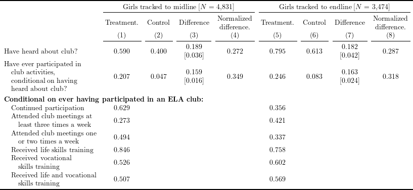

# Install and load packages ---------------
packages <- c(
"tidyverse",
"haven",
"lfe",
"broom",
"stargazer",
"broom",
"kableExtra",
"labelled",
"XML",
"magrittr",
"magick",
"pdftools",
"scales"
)
pacman::p_load(packages, character.only = TRUE, install = TRUE)
# Load an example dataset ---------------
data <- read_dta("Bandiera2020_replication/ELA.dta")
data <- data %>%
mutate(
both_training = case_when(
is.na(livelihoodMOREfew) & is.na(lifeskillMOREfew) ~ NaN,
livelihoodMOREfew == 1 & lifeskillMOREfew == 1 ~ 1,
TRUE ~ 0
),
Qboth_training = case_when(
is.na(QlivelihoodMOREfew) & is.na(QlifeskillMOREfew) ~ NaN,
QlivelihoodMOREfew == 1 & QlifeskillMOREfew == 1 ~ 1,
TRUE ~ 0
),
Roften3WEEK = often3WEEK,
Roften1WEEK = often1WEEK,
RlifeskillMOREfew = lifeskillMOREfew,
RlivelihoodMOREfew = livelihoodMOREfew,
Rboth_training = both_training
)var_list_1 <- c(
"C_clubheard", "C_clubparticipateIMP"
)
var_list_2 <- c(
"C_stillgoing", "often3WEEK", "often1WEEK",
"lifeskillMOREfew", "livelihoodMOREfew", "both_training"
)
var_list <- c(var_list_1, var_list_2)
var_label <- c(
"Have heard about club?",
"Have ever participated in
\\hspace{1em}club activities,
\\hspace{1em}conditional on having
\\hspace{1em}heard about club?",
"Continued participation",
"Attended club meetings at\n\\hspace{1em}least three times a week",
"Attended club meetings one\n\\hspace{1em}or two times a week",
"Received life skills training",
"Received vocational\n\\hspace{1em}skills training",
"Received life and vocational\n\\hspace{1em}skills training"
)
make_table <- function(data, var_list, panel) {
if (panel == "follow_up") {
data_sub <- data %>%
filter(follow_up == 1, !is.na(age))
var_list_panel <- paste0("R", var_list)
} else if (panel == "endline") {
data_sub <- data %>%
filter(endline == 1, !is.na(age), panel == 1)
var_list_panel <- paste0("Q", var_list)
}
diff_vec <- map_df(
var_list_panel,
~ felm(
as.formula(
paste0(
.x, "~ treatment | 0 | 0 | villid"
)
),
data_sub
) %>%
summary() %>%
coefficients %>%
.["treatment", c("Estimate", "Cluster s.e.")]
) %>%
mutate(
diff = paste0(
formatC(Estimate, digits = 3, format = "f"), "\n",
"{[", formatC(`Cluster s.e.`, digits = 3, format = "f"), "]}"
) %>%
linebreak(align= "c")
) %>%
.$diff
sum_mat <- data_sub %>%
filter(follow_up == 1, !is.na(age)) %>%
group_by(treatment) %>%
summarise_at(
var_list_panel,
list(mean = mean, sd = sd),
na.rm = TRUE
) %>%
arrange(desc(treatment))
mean_mat <- sum_mat %>%
select(ends_with("_mean")) %>%
t()
sd_mat <- sum_mat %>%
select(ends_with("_sd")) %>%
t()
norm_diff <- ((mean_mat[,1] - mean_mat[,2]) / sqrt(sd_mat[,1]^2 + sd_mat[,2]^2)) %>%
formatC(digits = 3, format = "f")
out_mat <- cbind(
mean_mat %>%
formatC(digits = 3, format = "f"),
diff_vec,
norm_diff
) %>%
set_rownames(NULL) %>%
set_colnames(NULL)
out_mat[3:nrow(out_mat), 2:ncol(out_mat)] <- ""
return(list(out_mat, format(nrow(data_sub), digits = 0, format = "f", big.mark = ",")))
}
table_follow_up <- make_table(data, var_list, panel = "follow_up")
table_endline <- make_table(data, var_list, panel = "endline")
cbind(
var_label,
table_follow_up[[1]],
table_endline[[1]]
) %>%
as_tibble() %>%
mutate(var_label = linebreak(var_label, align = "l")) %>%
set_colnames(NULL) %>%
kable("latex", booktabs = TRUE, escape = FALSE, align = c("l", rep("c", 8))) %>%
kable_styling(latex_options = "scale_down") %>%
add_header_above(c(" ", paste0("(", seq(8), ")"))) %>%
add_header_above(
c(" ", rep(c("Treatment.", "Control", "Difference", "Normalized\ndifference."), 2)),
line = FALSE
) %>%
add_header_above(c(
" " = 1,
setNames(4, str_interp("Girls tracked to midline [$N$ = ${table_follow_up[[2]]}]")),
setNames(4, str_interp("Girls tracked to endline [$N$ = ${table_endline[[2]]}]"))
),
escape = FALSE
) %>%
pack_rows(index = c(
" " = length(var_list_1),
"Conditional on ever having participated in an ELA club:" = length(var_list_2)
)) %>%
save_kable("tex/Bandiera2020_table3_replicate.tex")